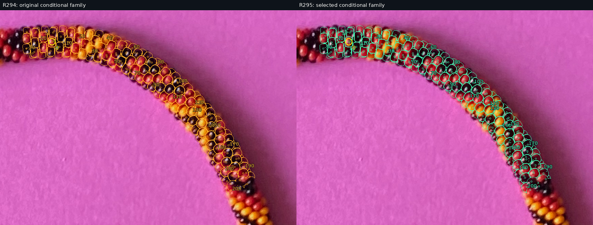
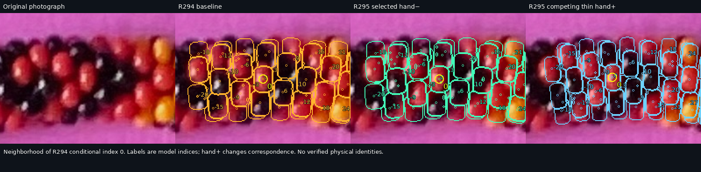
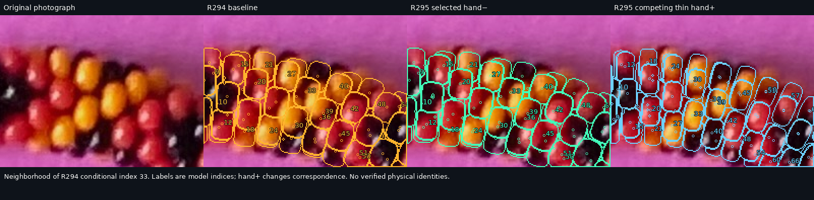
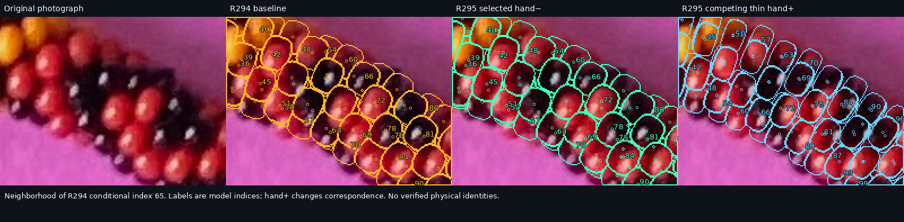
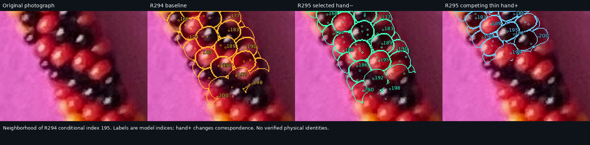
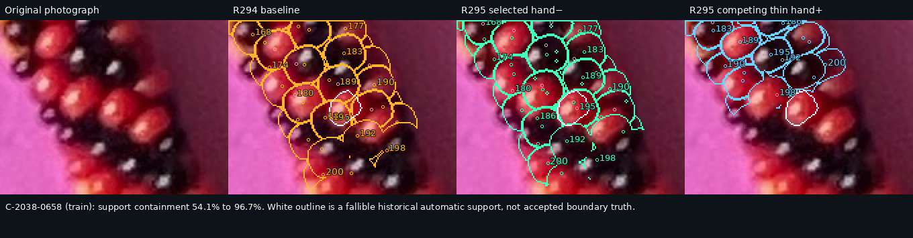
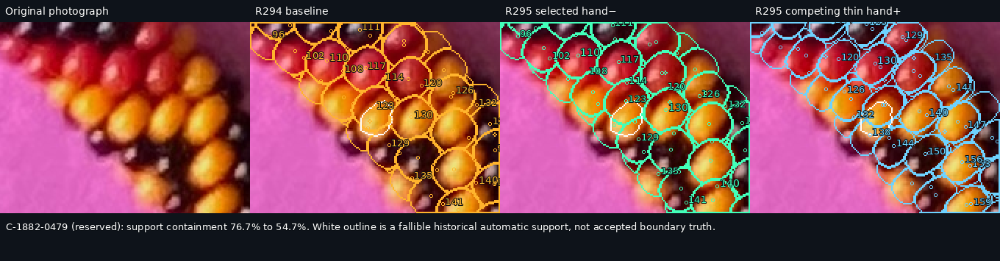
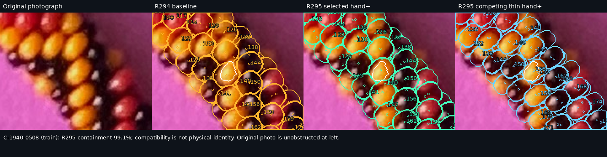
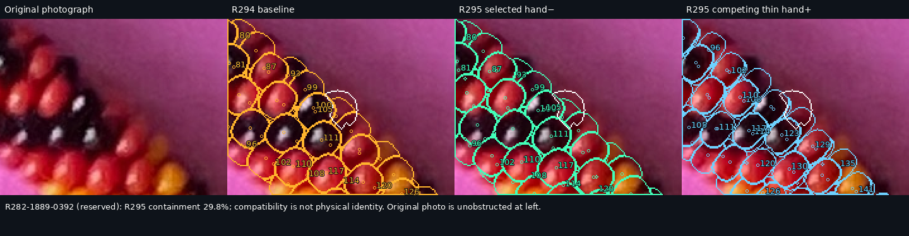
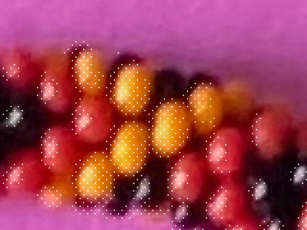

R295: physically feasible geometry, improved local compatibility, unresolved ownership
New reserved large regions: 0/5 → 2/5 compatible, but mean containment 69.3% → 68.6%. Reserved patches: 17/19 compatible in both. The gains coexist with clear regressions. All principal models are physically certified; no physical identities or repeating pattern are recovered.
Bead 0 and complete conditional −20…200 run
Yellow ring marks bead 0. Green center markers have compatible photographed support; gray markers are geometric predictions without compatible support. This does not establish distinct physical identities. Cyan/green/orange lines are predicted first-hit boundaries. Bead centers and highlights are different measurements. Hidden indices remain in every export.
Open full native image
Frozen independent regions
Compatibility = at least 80% of native support owned by one visible surface, with at least 20 percentage points over its rival. These automatic regions are fallible and are not user-accepted contours. No accepted colored contour lies in this requested section. Training, development-validation, reserved, and buffer observations are retained separately.
Complete run side by side

index 0
Neighborhood of R294 conditional index 0. Labels are model indices; hand+ changes correspondence. No verified physical identities.

Unmarked native cropindex 33
Neighborhood of R294 conditional index 33. Labels are model indices; hand+ changes correspondence. No verified physical identities.

Unmarked native cropindex 65
Neighborhood of R294 conditional index 65. Labels are model indices; hand+ changes correspondence. No verified physical identities.

Unmarked native cropindex 195
Neighborhood of R294 conditional index 195. Labels are model indices; hand+ changes correspondence. No verified physical identities.

Unmarked native croplargest gain
C-2038-0658 (train): support containment 54.1% to 96.7%. White outline is a fallible historical automatic support, not accepted boundary truth.

Unmarked native croplargest regression
C-1882-0479 (reserved): support containment 76.7% to 54.7%. White outline is a fallible historical automatic support, not accepted boundary truth.

Unmarked native cropsuccessful section
C-1940-0508 (train): R295 containment 99.1%; compatibility is not physical identity. Original photo is unobstructed at left.

Unmarked native cropreserved failure
R282-1889-0392 (reserved): R295 containment 29.8%; compatibility is not physical identity. Original photo is unobstructed at left.

Unmarked native crop
Observed photographic edges
White samples below show measured image gradient or dark-ridge evidence used by the objective. Some are illumination edges, not ownership seams. Compare with the unobstructed index-33 crop and model boundaries above.

Packing, shape and competing correspondence
The thin hand+ family is now physically possible: axial thickness and pitch change together. It improves selected large regions but drifts to different conditional indices and loses requested-run patch coverage. The joint training objective chooses the original hand− family. The tested legacy-radius controls penetrate neighbors. Failed envelope tests were distinguished from actual intersections; an annular-volume fallback located one shallow penetration missed by sampled surfaces.
Screening contact records · Independent shallow-overlap witness · Paired dimension/spacing and camera controls · Integer assignment alternatives and search history
Full scientific exports
- R294: 221 positions CSV · surfaces, correspondences, uncertainty · evaluation and physical audit
- local: 221 positions CSV · surfaces, correspondences, uncertainty · evaluation and physical audit
- global: 221 positions CSV · surfaces, correspondences, uncertainty · evaluation and physical audit
- geometry: 221 positions CSV · surfaces, correspondences, uncertainty · evaluation and physical audit
- R295: 221 positions CSV · surfaces, correspondences, uncertainty · evaluation and physical audit
- hand-plus: 221 positions CSV · surfaces, correspondences, uncertainty · evaluation and physical audit
- light: 221 positions CSV · surfaces, correspondences, uncertainty · evaluation and physical audit
All source Phase 1 pixels, positions, colors and historical experiments remain unchanged. Uncertainty is conditional parameter sensitivity, not a confidence interval. Reflections constrain candidate surface normals and lighting; they are never physical black-body centers.